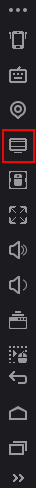
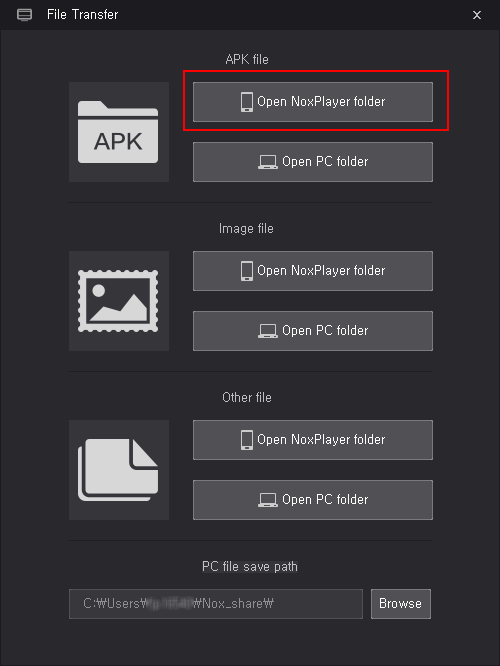
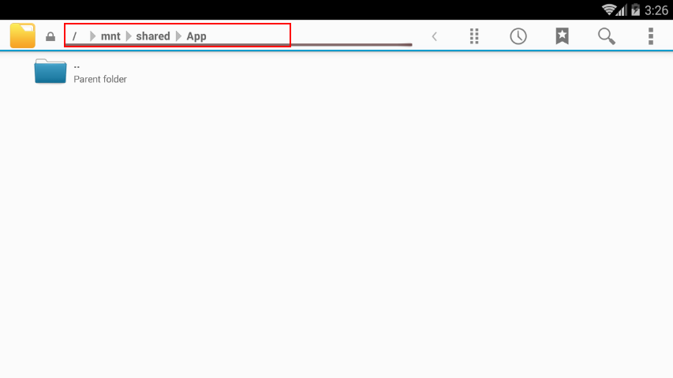
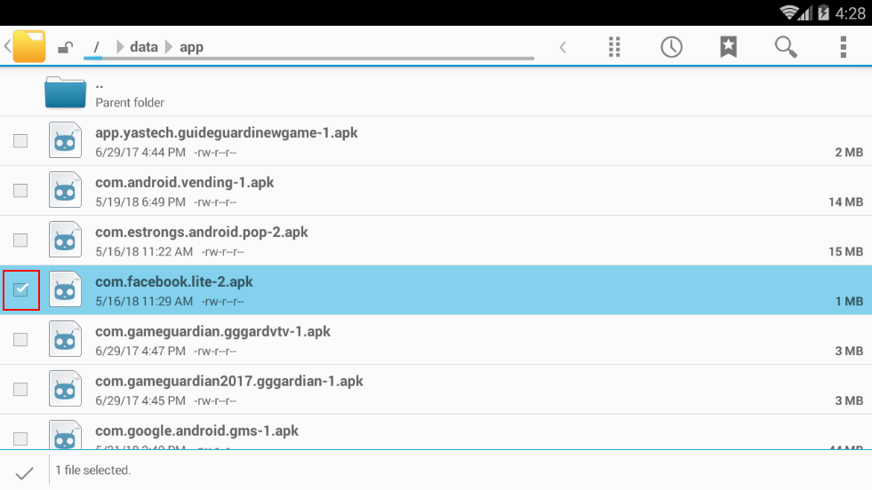
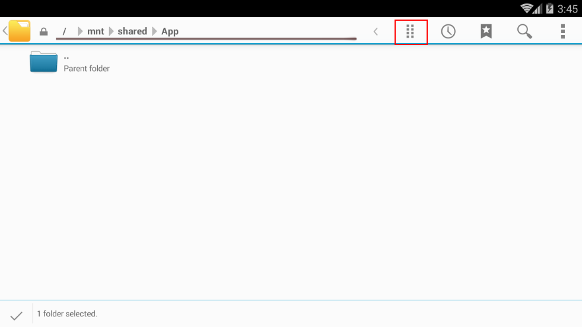
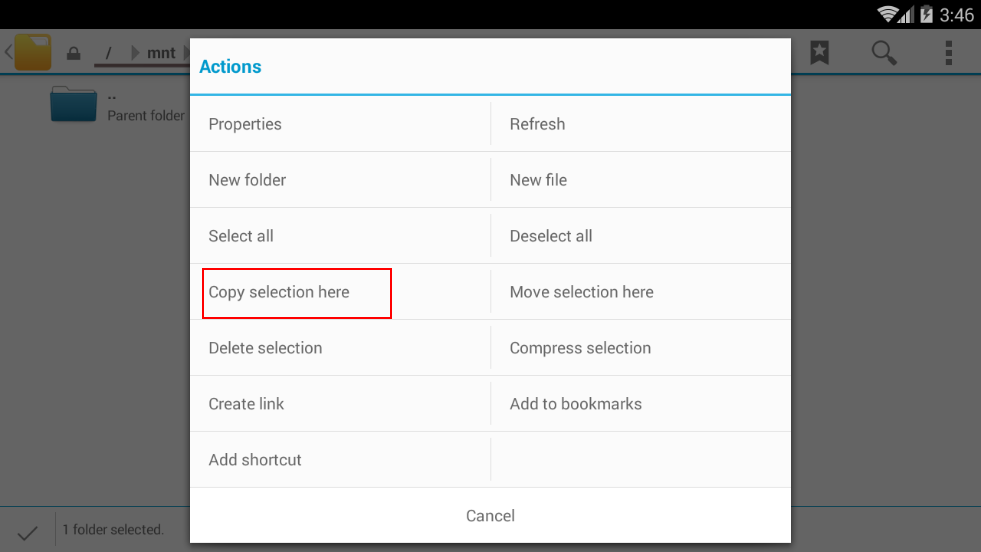
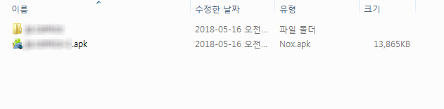
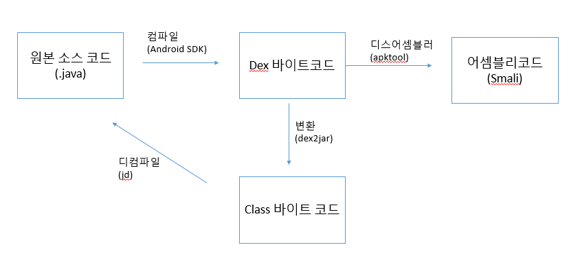

정적분석
Table of Contents
1 개념
- 안드로이드 계열의 어플리케이션 파일은 apk 확장자이다.
- 프로그램 소스가 제대로 난독화가 되어있는지 , 프로그램 리패키징이 가능한지 체크한다.
- smali 코드는 사람이 해석하기 어려우므로 보다 읽기 쉬운 java 파일을 얻는 용도로도 쓴다. (프로그램 코드 분석)
1.1 체크 포인트
1.1.1 프로그램 난독화 여부
- JNI 사용여부 체크방법 : native, System.loadLibrary,JNIEnv, jobject 등의 키워드로 검색해본다.
1.1.2 중요정보 하드코딩
- 내부에 중요한 정보 (암호 키 등) 가 하드코딩 되어 있는지 체크한다.
- SHA1, AES, MD5, key , security, cipher, personal, decrypt 등과 같은 키워드로 검색해 본다.
1.1.3 시큐어 코딩이 되어 있지 않는 코드
- 취약한 코드를 찾는다. (SQL Injection 가능성 등)
2 준비단계
정적분석을 편하게 하기 위해서는 먼저 APK 파일을 녹스 플레이어에서 PC 환경으로 복사해야 한다.
2.1 APK을 얻는 방법
2.1.1 Nox 에뮬레이터 내의 파일을 PC로 복사하는 방법
- 기본 File Manager를 사용해서 복사한다.
- 먼저 루팅이 되어 있어야 한다. 루팅이 되어 있는지 다시 한번 확인한다.
- 녹스플레이어 우측 화면에서 'My Computer'를 클릭한다. 혹은 단축키 Ctrl + 3을 누른다.

그러면 다음과 같은 화면이 나타난다.
Open NoxPlayer folder를 클릭한다.

그러면 다음과 같이 녹스 플레이어 내에서 /mnt/shared/App 디렉터리로 이동된다. 현재는 아무 것도 나타나 있지 않다. 상단의 주소 부분을 클릭해서 다른 디렉터리로 이동할 수 있다.

apk파일은 /data/app/에 있다. 이 디렉토리로 이동한다.
(참고로 각 앱에서 쓰이는 각종 파일들은 /sdcard/Android/data 디렉토리에 존재한다. )
그러면 다음과 같이 각 앱들에 해당하는 디렉터리가 보인다. 이 중에서 분석하고 싶은 앱을 선택해서 PC로 복사하면 된다.

체크박스를 클릭하고 /mnt/shared/App 으로 이동한다.
상단의 액션을 클릭한다.

'Copy Selection here' 를 클릭하면 복사된다.

참고로 해당 폴더는 PC의 'C:\Users\[UserName]\Noxshare\App' 폴더에 연동되어 있다.
PC에서 해당 폴더로 들어가면 파일을 확인할 수 있다.

2.1.2 File Expert 앱 활용
- 구글 플레이 스토어에서 다음 'File Expert'라는 앱을 검색해서 설치한다.
- 이 앱을 사용하면 루팅하지 않아도 apk를 복사하는 것이 가능하다고 한다.
3 정적 분석 시작
3.1 APK 파일에 대해서
- apk 파일은 기본적으로 압축 파일 포맷이다.
- 그 증거로 압축프로그램으로 apk 파일을 열어보면 내부에 있는 파일들이 보인다.
3.2 압축 풀기
- 압축을 한번 풀어본다.
- properties 파일과 텍스트 파일들의 내용을 볼 수 있다.
- 그러나 가장 중요한 소스코드는 classes.dex 파일로 되어 있어 볼 수 없고, 리소스 파일도 resources.arsc 파일로 되어 있어서 내용을 볼 수가 없다.
- 또한, 매니페스트 파일(AndroidManifest.xml) 파일도 암호화 처리가 되어 볼 수 없는 xml 파일로 변해 있다.
- 소스 코드의 내용을 보려면 '디컴파일러' 라는 특별한 프로그램이 필요하다.
4 정적 분석을 도와주는 툴
4.1 자바 코드 분석 툴
안드로이드의 기본 개발 언어는 자바이다. 따라서 apk파일은 내부적으로 많든 적든 자바가 쓰였다고 생각할 수 있다. apk파일을 디컴파일하려면 최소한 다음의 두 가지 툴이 필요하다.
4.1.1 dex2jar
- dex 파일을 일반적인 JVM에서 해석가능한 class 파일(jar파일)로 변환해준다.
설치방법
dex2jar 를 다음 URL에서 다운로드 받은 후에 커맨드에서 바로 실행가능하도록 다운로드 받은 경로는 PATH 에 추가해준다.
사용법
d2j-dex2jar [apk 명]
참고로 매니페스트 XML 파일(앱 설정 파일)은 dex2jar 로 복원되지 않는다. 이 파일을 보려면 추후에 설명할 apktool 을 이용해야 한다.
4.1.2 jd
- 자바 디컴파일러
- 자바 개발자라면 적어도 한 번쯤은 써봤을 법한 자바 디컴파일러이다.
- class 파일을 사람이 이해하기 쉬운 java 파일로 변환해준다.
설치방법
구조도는 다음과 같다.

Figure 8: java 디컴파일 과정 구조도
4.1.3 apk 툴
4.2 C# 코드 분석 툴
4.3 코드 재서명툴
4.4 리소스 정보 확인 툴
- AAPT (Android Asset Packaging Tool)
4.5 기타
- CodePro Analytix 라는 구글에서 제공하는 무료 툴이 있다고 한다.
- 하지만 현재 왜인지 다운로드가 안됨.
- 안드로이드 스튜디오에 Mint 랑 Firebase 라는 것이 있는데 아마 여기로 통합된 듯…
- 원본 소스 없이 역컴파일한 상태로는 정적분석 툴을 돌리는 것은 안되는 것 같다. (2016.11. 24 확인)
5 코드 보호 방법
5.1 네이티브 랭귀지(C)사용
- 조작에 민감한 값들은 JAVA 쪽에 두어서 JNI로 전달한다.
- 코드가 민감한 부분은 JNI 를 이용한다.
- 라이선스 검증과 같은 유출에 민감한 로직들은 Decompile 후 조작이 가능한 부분들이다. 이런 부분들은 C/C++ 로 작성하게 되면 보다 안정성을 보장받을 수 있다.
- 이는 JAVA 보다는 ARM assemble language 의 난독성이 높기 때문이다.
- 참고 : "프로그래밍 안드로이드" 책의 마지막 장에 JNI 개발 관련한 부분이 있음. (475p ~ 500p)
5.2 코드 난독화
코드 난독화는 어떻게 하는가?
안드로이드 스튜디오에서 제공하는 proguard 와 proguard의 유료버전인 dexguard 가 있다고 한다.
- proguard 는 안드로이드 스튜디오 프로젝트에서 build.gradle 파일을 열고 buildTypes 를 기술하는 곳에 minifyEnabled 를 true로 설정한다.
- proguard-rules.pro 파일에 옵션을 기술한다.
-renamesourcefileattribute SourceFile 소스 파일 변수명 바꾸기 -keep class 라이브러리패키지명.** { *; } <– 라이브러리는 따로 난독화 하지 않을 때
- 실습결과 : 결과를 봤는데 난독화가 되지 않았다. 설정해야 하는 뭔가가 더 있는 것 같은데
나중에 다시 확인해보자.